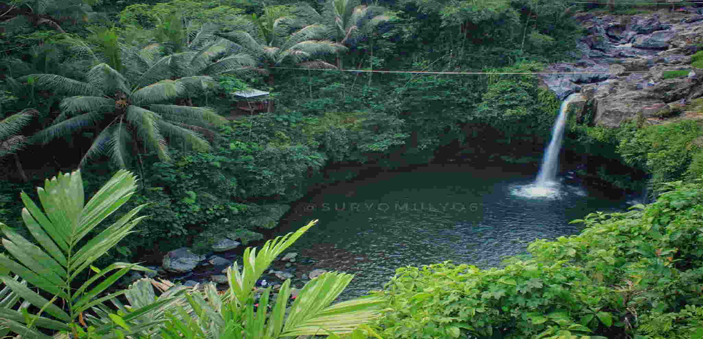
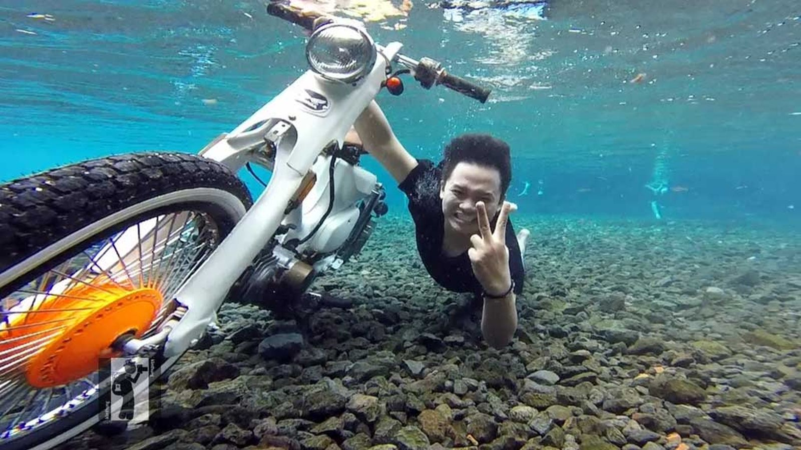

Berjarak tiga hingga empat jam dari Yogyakarta, Purbalingga hampir memiliki semua spot wisata alam, kecuali pantai tentunya. Anda ingin menyaksikan air terjun yang keren, dataran tinggi yang mengesankan, atau bahkan mendaki gunung yang luar biasa, semua bisa dilakukan di Purbalingga.
Anda juga bisa membuat rencana menjelajahi Jawa Tengah. Karena pertimbangan waktu perjalanan yang panjang dari Yogyakarta, sekitar tiga hingga empat jam perjalanan, selain ke Purbalingga, tak ada salahnya mampir ke Purwokerto dan menikmati alam di sana. Maklum, secara geografis, Purbalingga berdekatan dengan Purwokerto, Kebumen atau bahkan Tegal.
Cara sampai ke Purbalingga? Jangan khawatir. Karena lokasinya yang ada di pulau Jawa, hampir semua moda transportasi ada di sana. Bila menggunakan pesawat terbang, Anda bisa turun di Yogya dan ikut shuttle bus menuju Purbalingga. Jika ingin sedikit bersusah payah, tak ada salahnya datang dengan menggunakan bus jurusan Purwokerto, namun turun di terminal Purbalingga.
Ingin menggunakan kereta api? Bisa juga, meski harus transit di Purwokerto dan melanjutkan perjalanan dengan menggunakan bus. Dengan beragamnya cara untuk sampai ke Purbalingga, sepertinya tak ada alasan lagi untuk tidak berkunjung ke sana.
1.Kampung Kurcaci


Tak hanya di Yogyakarta dan Lembang Bandung, para Bangsa Hobbit rupanya juga membuat ‘rumah’ di Purbalingga. Berada di kaki Gunung Slamet, spot bernama Kampung Kurcaci itu menampilkan dua rumah dengan ukuran kecil dan unik, juga berwarna mencolok. Bentuknya nyaris sama dengan rumah yang ditinggali Bilbo dan Frodo Baggins, kaum Hobbit di trilogi Lords of the Ring. Tapi jangan berharap Anda bisa bertemu dengan para kurcaci ini.
Meski begitu, untuk mengobati kekecewaan, Anda masih bisa berfoto di depan ‘rumah’ mereka, kok! Hasilnya kece banget. Spot lain yang harus Anda kunjungi adalah hutan pinus dan Air Terjun Curug Lawang, yang berada dekat dengan lokasi. Anda juga bisa berkemah atau pun trekking di wilayah ini. Dan ada rumah pohon juga. Dijamin seru!
Tiket Masuk: Rp5.000
Lokasi: Serang, Karangreja, Kabupaten Purbalingga, Jawa Tengah
2.Curug Tempuran

Dari kejauhan saja, hasrat untuk menceburkan diri langsung menggelora. Kesegaran air terjun/curug Tempuran memang tak terelakkan. Terletak tak jauh dari pusat kota Purbalingga, Curug Tempuran menawarkan kealamian lingkungan dan atmosfer yang menyegarkan.
Pohon yang rindang dan aliran sungai yang tenang mewarnai spot wisata ini. Curug Tempuran juga memiliki kolam yang luas. Dijamin Anda bisa berenang dan menghabiskan waktu bermain di sini sepuasnya. Tapi tetap waspada, ya! Soalnya, kolam airnya cukup dalam.
Tiket Masuk:Gratis
Jl. Raya Binangun No.18, Pengalusan, Pengalusan, Mrebet, Kabupaten Purbalingga, Jawa Tengah.
3.Owabong
Taman wisata air di Bojongsari ini menawarkan wahana yang berbeda dari taman air di tempat lain, yaitu ombak deras yang dioperasikan secara penuh dari pagi hingga sore.
Diklaim oleh pengelola, Anda tak akan menemukan karakter ombak yang sama di tempat lain. Untuk membuktikannya Anda harus datang langsung ke Owabong. Selain ombak deras, beragam wahana lain siap memanjakan Anda dan keluarga. Dan jangan khawatir mengenai kualitas penunjang, yang membuat Anda semakin betah berada di sini.
Masuk: Rp20.000 | Sabtu, Minggu dan hari libur Rp30.000
Jl. Raya Owabong No.1, Bojongsari, Kabupaten Purbalingga, Jawa Tengah. Koordinat di sini.
Telepon: (0281) 659 6967
Operasional: hari 07.00 – 17.00
4.Rumah Pohon Igir Wringin
Ada yang menyebut Igir Wringin sebagai Kalibiru-nya Purbalingga, lho!
Di rumah pohon Igir Wringin, Anda tak hanya disuguhi pemandangan yang eksotik, panorama alam yang fantastis dan suasana yang menyenangkan, tapi juga rumah pohon unik yang tak akan Anda temui di tempat lain.
Rumah pohonnya disusun dari banyak ranting pepohonan. Tapi jangan khawatir, kekuatan rumah pohon ini bisa dijamin, asal tidak melebihi kapasitas. Dari sini, Anda bisa menikmati lanskap perbukitan dan sawah di Purbalingga.
Jangan lupa untuk berswafoto di sini ya. Tapi untuk sampai ke spot ini, usaha yang dibutuhkan tidak mudah. Meski demikian, setelah sampai lokasi, mata Anda akan dimanjakan, kok!
Tiket Masuk: Rp5.000
Lokasi: Desa Panusupan, Kec. Rembang, Panusupan, Purbalingga, Kabupaten Purbalingga, Jawa Tengah.
5.Telaga Situ Tirta Marta

Yang tak suka bermain dengan air? Apalagi bila airnya jernih dan menyegarkan. Belum lagi jika pemandangan dan atmosfernya juga cozy.
Paket itu bisa Anda dapatkan di Situ Tirta Marta. Serunya, Anda juga bisa melakukan underwater photography dengan background seperti ‘surga’. Banyak spot keren untuk Anda bermain di bawah permukaan air. Pihak pengelola juga menyediakan sejumlah ‘benda yang tidak biasa’ ditemukan di dasar kolam. Spot ini mengingatkan kita akan Umbul Pongok di Klaten. Tapi, bila datang ke sini, Anda akan merasakan dan melihat keistimewaan yang berbeda.
Masuk: Rp5.000 masuk ke lokasi, Rp150.000 untuk harga sewa kamera bawah air dan operatornya.
Lokasi: Karangcegak, Kutasari, Kabupaten Purbalingga, Jawa Tengah.
Operasional: Setiap hari 07.00 – 18.00